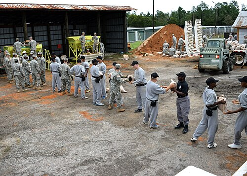
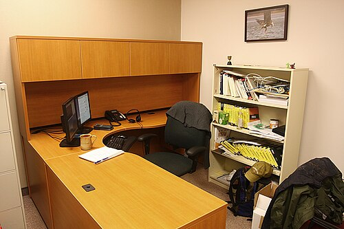

Small websites still matter
A case for websites that stay clear, direct, and independent instead of trying to become platforms.
Archive
A simple archive page keeps the site easy to browse as the number of posts grows.
All posts
Every article in one running list, with enough context to scan quickly and choose where to start.
A case for websites that stay clear, direct, and independent instead of trying to become platforms.
A note on choosing technology that stays useful, calm, and easy to live with.

Reflections on movement, unfamiliar places, and how travel sharpens attention.
Why better routines, documentation, and ownership can remove invisible work from engineering teams.
Designing office and internal support workflows that are easy to track, easy to understand, and harder to forget.

A short guide to writing documentation people will use in real work instead of documents that only look complete.